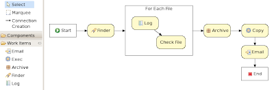

More declarative workflow
Some process languages allow you to basically do anything you want by allowing you to include code fragments in your process that are then executed during the execution of that process. This allows you for example to interact with basically any external service by writing a piece of code that invokes the service. While this approach offers a huge amount of power and flexibility to the end user, there are some mayor problems as well:
- Using code fragments to specify work is not really declarative: it does not only specify what should be executed but also how.
- By embedding the code in your process your are also usually linking your process to one specific environment. For example, creating a new personnel record is usually done differently in different locations / companies.
- If code fragments are used to communicate with external services, the process has no way of knowing this, which might result in errors in later stages. For example, a piece of code might be used to request the asynchronous execution of an external service, but the process might have been completed or aborted by the time the results return.
- It is usually difficult to test your process in a test environment without having to change the code (or making it a lot more complex), as the code usually refers to specific services and you don’t really want to contact production services during testing.
While it also possible to embed code fragments directly into your processes in Drools Flow, we encourage users to use work items to communicate with external services. A work item represents an abstract unit of work that needs to be executed by an external service. A work item specifies a name (which uniquely identifies the type of work, e.g. email or log) and parameters (as name-value pairs). These parameters can be hardcoded when defining the process or can be dynamically derived from the runtime process state.
Work item handlers are used to link abstract work item to the actual implementation that knows how to contact the specific external services. They must implement the executeWorkItem(WorkItem, WorkItemManager) method and signal the WorkItemManager upon completion (or abortion) of the work item, including possible results (as name-value pairs). These results can then of course be used in the process instance. Work item handlers need to be registered (at deployment or even at runtime) at the process engine. This allows us to for example to register a custom work item handler in test cases to simulate a specific environment.
The use of work items allows users to easily extend the power of the process engine themselves, by creating domain-specific work item nodes. The process designer supports the definition of different types of work items using a configuration file that defines the name, the parameters, the results and possibly a custom icon for the work item.
We have already created a small set of work items for common problems that can be used out of the box:
- Sending email
- Logging messages
- Finding files on a file system
- Archiving files
- Executing system commands
The following screenshot shows an example where a Finder is used to select all files on the file system that match certain criteria, followed by a logger that logs and checks each of these files, where the valid files are archived and then copied to a specific location, where an email is sent to the administrator after successful completion of this process.

We are working on adding more work items by default, like invoking a web service, integration with services on the JBoss ESB, etc. With the help of the community, we hope to extend this set of work items significantly so we can offer users a large selection of work items in different application domains.

{kind=link}